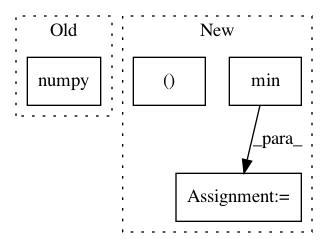

a922855fe7aef360e4a360caa800388d9c843355,art/classifiers/tensorflow.py,TensorflowV2Classifier,predict,#TensorflowV2Classifier#Any#Any#,673
Before Change
// // Run prediction
// results[begin:end] = self._sess.run(self._output, feed_dict=feed_dict)
results = self._model(x_preprocessed).numpy()
// print(type(results))
// sadf
return results
After Change
num_batch = int(np.ceil(len(x_preprocessed) / float(batch_size)))
for m in range(num_batch):
// Batch indexes
begin, end = m * batch_size, min((m + 1) * batch_size, x_preprocessed.shape[0])
// Run prediction
results[begin:end] = self._model(x_preprocessed[begin:end]).numpy()
In pattern: SUPERPATTERN
Frequency: 3
Non-data size: 4
Instances
Project Name: IBM/adversarial-robustness-toolbox
Commit Name: a922855fe7aef360e4a360caa800388d9c843355
Time: 2019-07-23
Author: beat.buesser@ie.ibm.com
File Name: art/classifiers/tensorflow.py
Class Name: TensorflowV2Classifier
Method Name: predict
Project Name: IBM/adversarial-robustness-toolbox
Commit Name: e21ef336207b0f9ae378c77430d298945827830a
Time: 2019-02-12
Author: M.N.Tran@ibm.com
File Name: art/classifiers/pytorch.py
Class Name: PyTorchClassifier
Method Name: get_activations
Project Name: rusty1s/pytorch_geometric
Commit Name: 5ffa38fca42bb3fbee030f4b80264e0f4910a49c
Time: 2018-01-16
Author: matthias.fey@tu-dortmund.de
File Name: torch_geometric/datasets/utils/tu_format.py
Class Name:
Method Name: read_adj